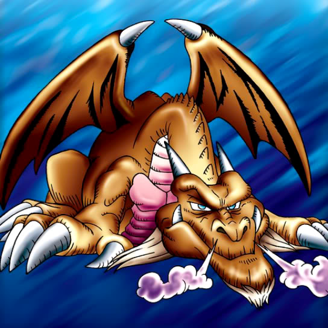

Thousand Dragon

STATS
ATK: 2400
DEF: 2000DECK COST
Deck Cost per Card: 44Fusion List (9 Possible Fusions)
- Thousand Dragon + Bolt Escargot = Twin-Headed Thunder Dragon
- Thousand Dragon + Bolt Penguin = Twin-Headed Thunder Dragon
- Thousand Dragon + Electric Snake = Twin-Headed Thunder Dragon
- Thousand Dragon + Kaminarikozou = Twin-Headed Thunder Dragon
- Thousand Dragon + Kaminari Attack = Twin-Headed Thunder Dragon
- Thousand Dragon + Mega Thunderball = Twin-Headed Thunder Dragon
- Thousand Dragon + Oscillo Hero #2 = Twin-Headed Thunder Dragon
- Thousand Dragon + Sanga of the Thunder = Twin-Headed Thunder Dragon
- Thousand Dragon + The Immortal of Thunder = Twin-Headed Thunder Dragon